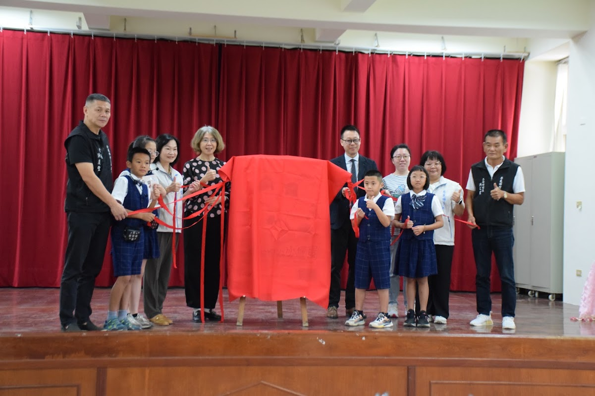
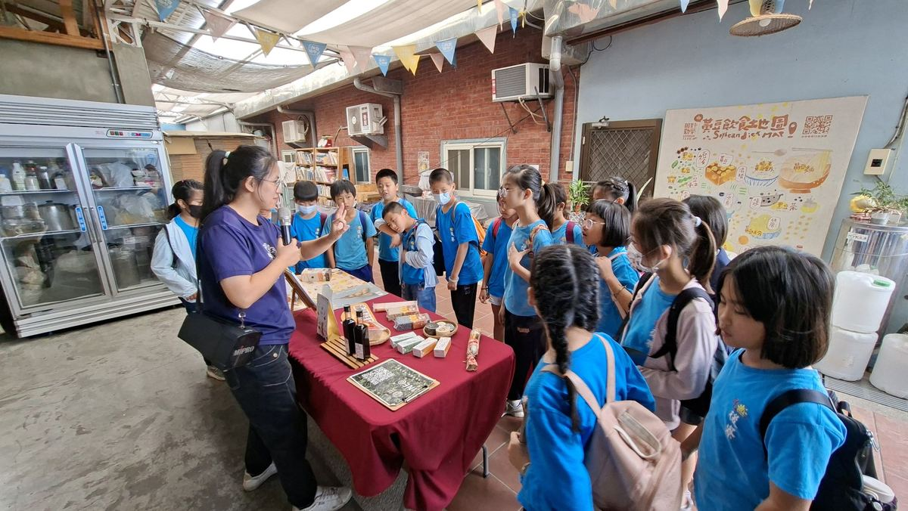
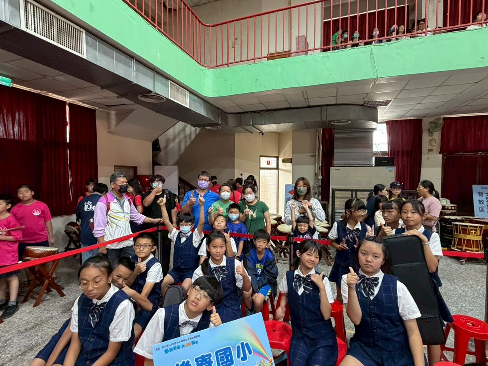
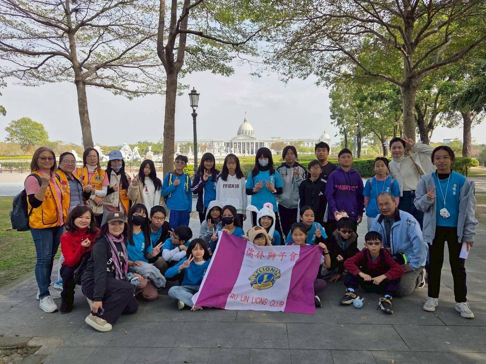
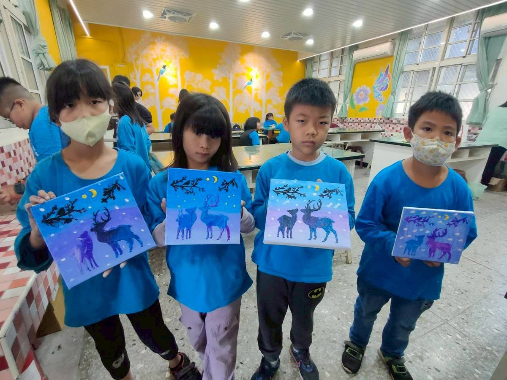
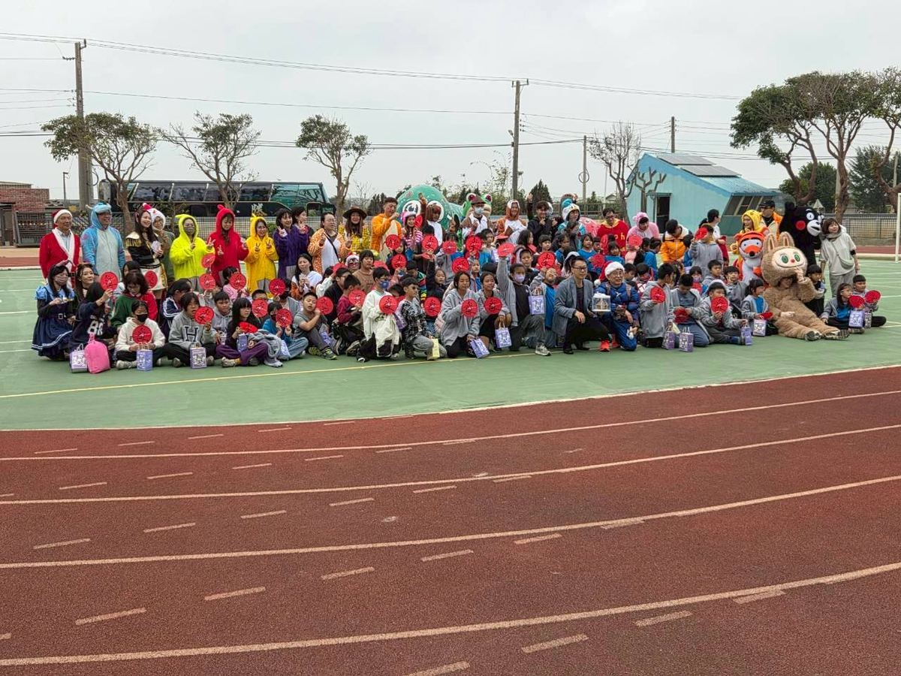
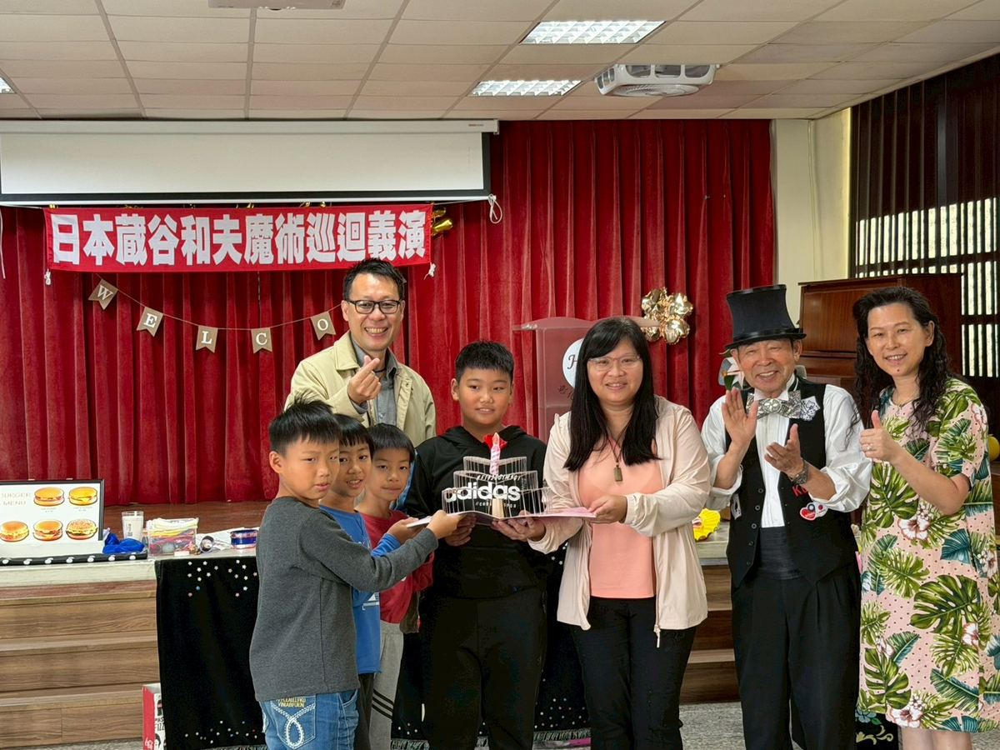
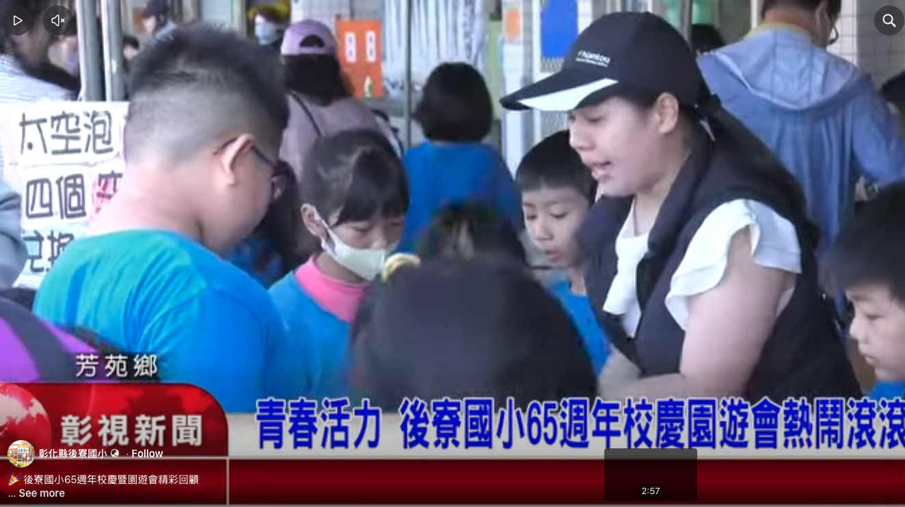
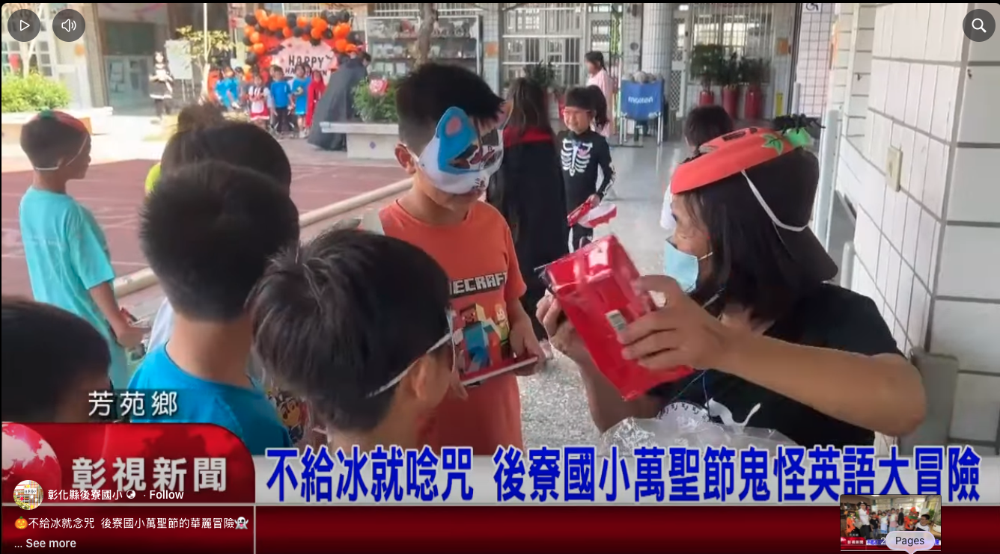

Field trips, reading walks, music and magic — what a small village school can do when every child is given the stage. 遊學、走讀、音樂與魔術——當每一個孩子都被認真對待，一所偏鄉小校能做的事比想像更多。

Who says health education has to be dull? Houliao's young authors turned disease-prevention know-how into a warm-hearted picture book — and held a real launch and book-signing at the township library.

At Beidou Junior High, Houliao children lived out the meaning of "learning by doing" — pressing tofu by hand in the morning, assembling telescopes in the afternoon, and ending the day staring straight at the sun.

At the county talent showcase, Houliao's children took the closing slot — and filled the hall with the most radiant kind of confidence.
Entertainer Bao Wei-ming's charity caravan — already a hit across 100-plus rural schools — made its 147th stop right here at Houliao, with games, magic, sing-alongs and a pile of gifts.

With the help of the Confucian-Forest Lions Club, Houliao's senior grades set out on a reading journey across Tainan — book walls like waterfalls, old streets you can touch, and art beneath a museum dome.

Sunlight, soft colours and acrylic reindeer — a day of art at the county Fun-Study Centre that ended, as Houliao days do, with children quietly tidying every tool away.

On a winter playground, balloons, a parachute canopy and a pile of handwritten cards turned an ordinary morning into the most heartwarming scene of the year.

Remember the Japanese magician who amazed us two years ago? Grandpa Kazuo Kuratani is back — with an upgraded Magic Show and one very brave volunteer: the principal's head.

▶The whole community gathered to wish Houliao a happy 65th birthday — lively student performances, a bustling market, and warm blessings from across the township, all captured on the news.

The whole campus became a world of magic. Little wizards solved English riddles, hunted ghosts and chanted spells to break the seals — a Halloween RPG that even made the Changhua TV news.